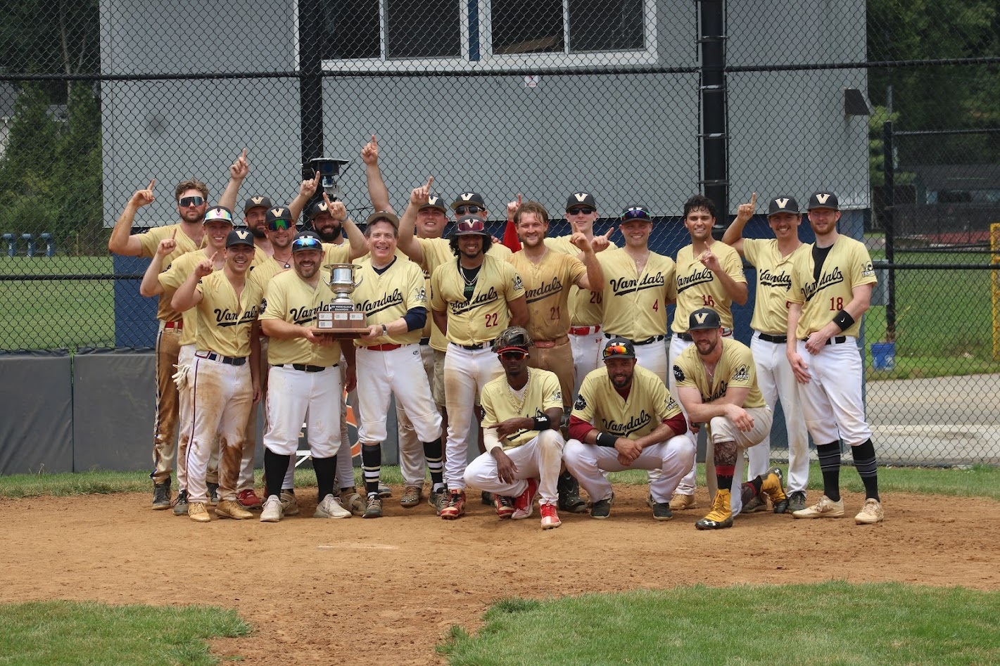

After securing their first championship, the Vandals looked to bring that success into the 2025 season. Determined and focused from day one, the team stormed through the schedule to finish with an impressive 26-4 record, closing the year on a remarkable 18-game winning streak, including a 7-game sweep through the playoffs. Several Vandals players secured DC Wood accolades with A. Orfield winning League MVP, W. Pope and J. Sara winning Championship Series MVPs, and J. Sara also winning a Gold Glove.
Eager to bounce back after falling just short in the summer, the Vandals joined forces with the Alexandria A's and the Senators Baseball Club
for the fall season. Once again, the Vandals found themselves in a familiar position: facing off in the
championship, this time against a combined team of the Arlington Mallards and Los Washington Bison. With
standout performances on the mound from N. Hammond and A. Vargas, the Vandals swept the series and secured their first fall championship.

Standings

Batting Stats